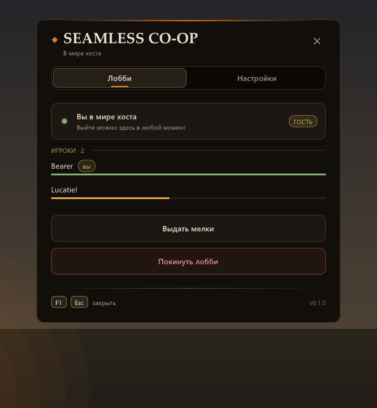
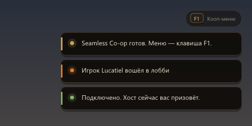
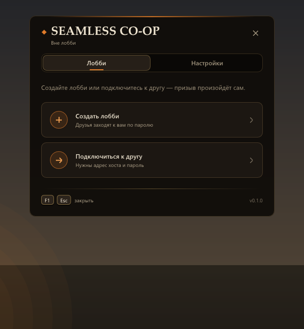
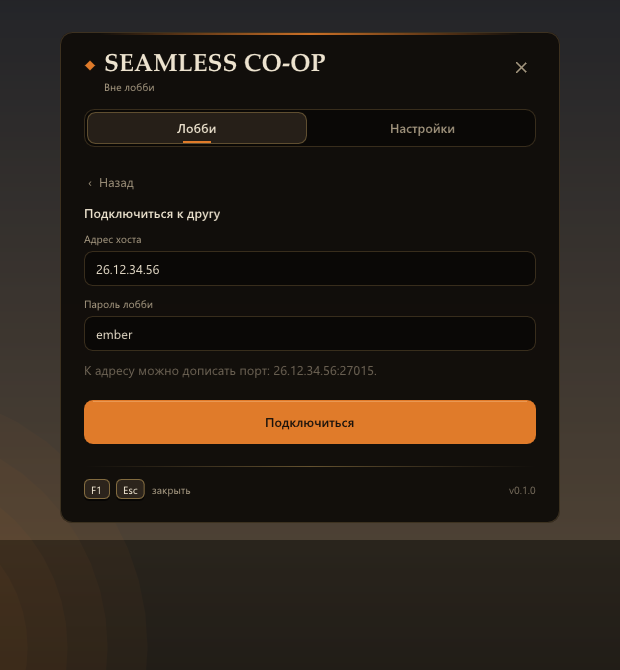
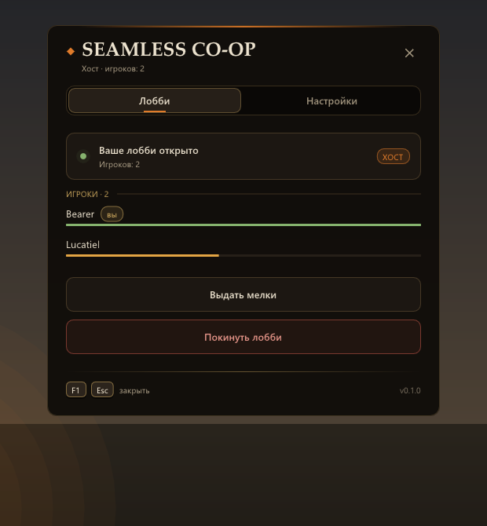
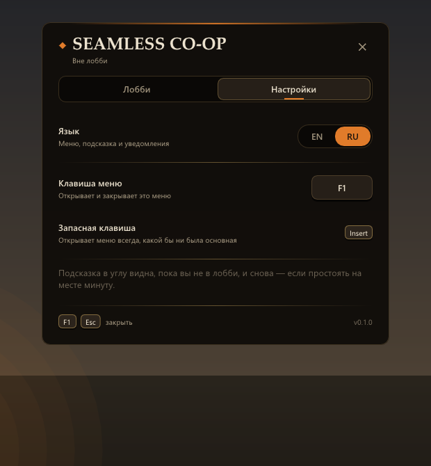

Каждому игрокуЧто нужно
- Dark Souls II: Scholar of the First Sin в Steam (ПК)
- Windows 10 или 11
- Radmin VPN (бесплатный), все в одной сети
Dark Souls II: Scholar of the First Sin · мод для ПК
Пройдите всю игру вдвоём. Знак друга ставится сам, и твоя игра сама его призывает — откуда угодно, даже из Маджулы, — а кооп не разваливается после босса, смерти или перехода в новую локацию.


Что меняется
Зашёл в лобби из меню — и всё: знак появляется прямо у хоста под ногами, и его игра сама призывает. Не нужны куколки и мелки, таймер фантома не кончается, и это работает даже там, где знаки ставить нельзя.
Убийство босса, смерть, костёр и переход между локациями не отправляют гостя домой.
Гость ходит по всему миру хоста, в том числе там, где призыв обычно невозможен.
Гость отдыхает у костров хоста, и отдых возвращает врагов у обоих игроков.
Подобранное гостем в мире хоста достаётся только ему и потом пропадает из его собственного мира — ничего не собирается дважды.
Погибший гость сразу возвращается в мир хоста. Смерть хоста никого не выкидывает.
Хост первым проходит в туман босса, гость — за ним; никто не возвращается, пока бой не решится.
А ещё: гость может разговаривать с NPC; меню в игре на F1 на русском и английском, лобби с паролем; возврат после вылета; журнал вылетов для отчётов и сервер в один клик для хоста.
Как начать
Game, рядом с DarkSoulsII.exe.StartServer.bat — он покажет адрес для друзей и создаст файл-ключ.ds2_server_public.key.Game.ds2_server_public.key от хоста.server_ip= в ds2_seamless_coop.ini.Хост: F1 → Создать лобби → пароль. Друг: F1 → Подключиться к другу → адрес и пароль, потом встань где-нибудь (только не у костра) — игра хоста сама тебя призовёт.
Скриншоты



